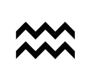

Le Verseau signe du Zodiaque
Le Verseau est le onzième signe du zodiaque. Dans l'Antiquité, cette constellation était visible à la fin de l'hiver, annonçant le renouveau et l'espoir. Le Verseau est souvent associé à l'innovation, à l'originalité et à la liberté.
En astrologie, il est lié à l'élément Air (logique...), ce qui lui confère une nature intellectuelle, ouverte et progressiste. Les natifs du Verseau sont souvent perçus comme indépendants, humanitaires et visionnaires. Ils peuvent aussi paraître détachés ou imprévisibles. (Je peux pas faire de jeu de mot puisque "Verseau" signifie littéralement que c'est un objet pour verser de l'eau...)